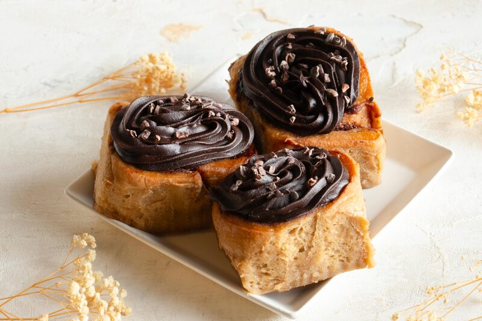
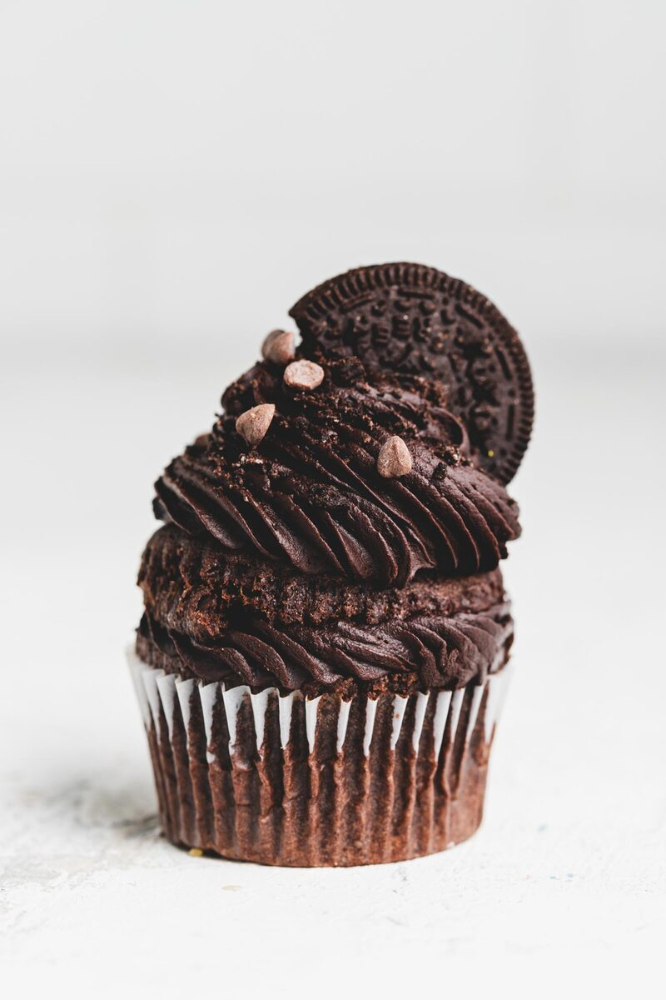
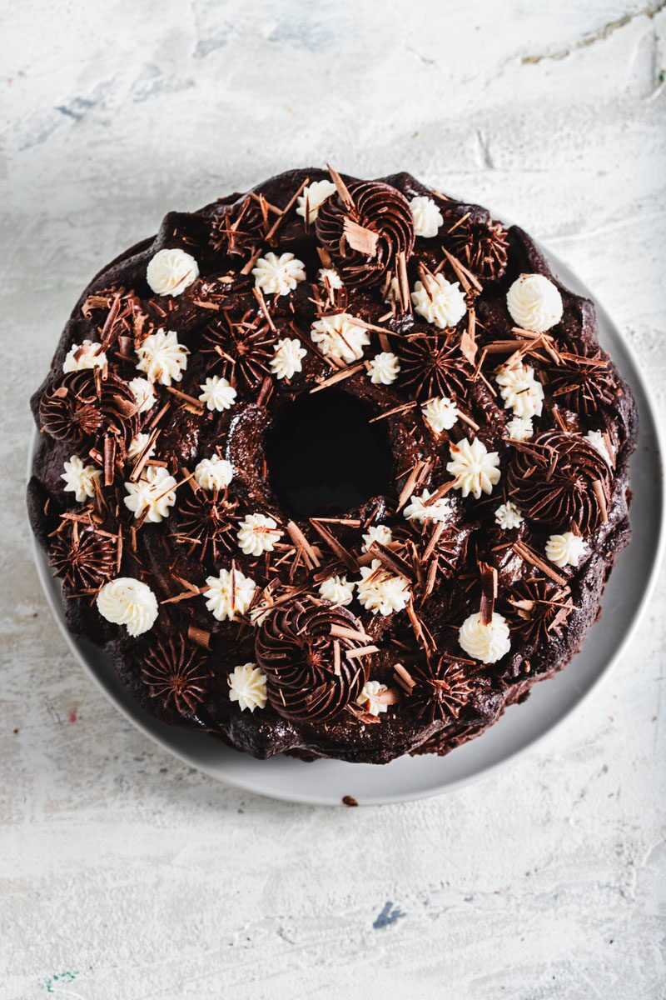
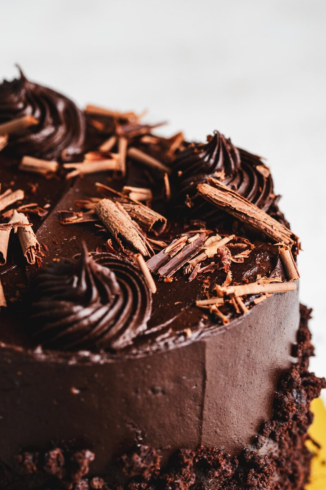

The Chocolate Frosting We Use at the Bakery
The vegan chocolate frosting we make in big batches, scaled for your kitchen. The best part: it’s stable at room temperature — no fridge, and it doesn’t melt.
Skip to recipe ↓This is the real one — the chocolate frosting we make in big batches at the bakery, scaled down for your kitchen. It’s vegan, deep and dark, and not so sweet it makes your teeth hurt.
Here’s the best part: it’s rock-stable at room temperature. No fridge needed, and it doesn’t melt. Frost a cake and leave it on the counter, pipe it in a warm kitchen, take it to a party in July — it holds its shape and stays put. That’s the whole reason we make it this way.
It comes together in one bowl in about ten minutes. Frost a cake, fill cupcakes, sandwich it between two cookies.
Why It Holds at Room Temperature
Most chocolate frosting is butter-based, and butter has one problem: it softens the second the kitchen warms up. Swap the fat and the whole thing changes — it stops being something you have to keep cold.
Vegetable Shortening
This is the secret to the whole thing. It’s what makes the frosting vegan and what makes it hold at room temperature. Shortening stays firm where butter slides, and it’s neutral in flavor, so the chocolate leads instead of fighting a dairy note.
Dutch Cocoa Powder
A big hit of it, so this comes out deep and dark, not pastel. Dutch cocoa is alkalized, which makes it smoother and rounder than natural cocoa — less of that sharp, raw bite. It’s what gives the frosting its grown-up chocolate flavor.
Water
Just enough to bring it to a spreadable, pipeable texture — no milk needed, which keeps it dairy-free and shelf-stable. Use it room temperature so it blends in clean.
Vinegar
The one that raises eyebrows. A tiny bit of acid brightens the cocoa and cuts the flat sweetness that shortening can leave behind. You won’t taste “vinegar” — you’ll taste more chocolate.

Vegan Chocolate Frosting

Ingredients
| Ingredient | Weight | % |
|---|---|---|
| Powdered sugar (about 2 cups) | 250g | 44.48% |
| Dutch cocoa powder (about 1 cup + 2 tbsp) | 115g | 20.46% |
| Vegetable shortening (about 7 tbsp) | 90g | 16.01% |
| Water, room temperature (scant ½ cup) | 100g | 17.79% |
| Vanilla bean powder (or 1 tbsp vanilla extract) | 5g | 0.89% |
| Vinegar | 1g | 0.18% |
| Salt | 1g | 0.18% |
| Total | 562g | 100% |
Frosts a two-layer 8-inch cake or about 18 cupcakes.
Instructions
- Sift the powdered sugar and Dutch cocoa together — this is what keeps it smooth, don’t skip it.
- Beat the shortening on its own until soft and creamy.
- Add the sugar-cocoa mix in a few additions, alternating with the water, beating between each. It’ll look dry, then come together.
- Add the vanilla, vinegar, and salt. Beat 2 to 3 minutes until fluffy.
- Too stiff? A teaspoon of water at a time. Too soft? A spoonful more powdered sugar.
Storage: keeps a few days covered at room temperature — no fridge required. Re-whip before using to bring back the fluff.
What You Can Do With It
Frost a cake or cupcakes, fill sandwich cookies, or pipe decorations that actually hold their edges in a warm room. Because it doesn’t need refrigeration, it’s the one I reach for when something has to travel or sit out at an event.

Common Failures and Fixes
- Too stiff to spread? Beat in water a teaspoon at a time until it loosens.
- Won’t hold a pipe? It’s too soft — beat in more powdered sugar, and make sure your shortening wasn’t warm to start.
- Grainy or gritty? The sugar and cocoa weren’t sifted. Sift next time, and keep beating — it smooths out with time.
- Tastes flat or cloying? You skipped the vinegar and salt. They’re small but they’re what cut the sweetness and lift the chocolate.
Make it once and it’ll become your default — the frosting you don’t have to babysit.